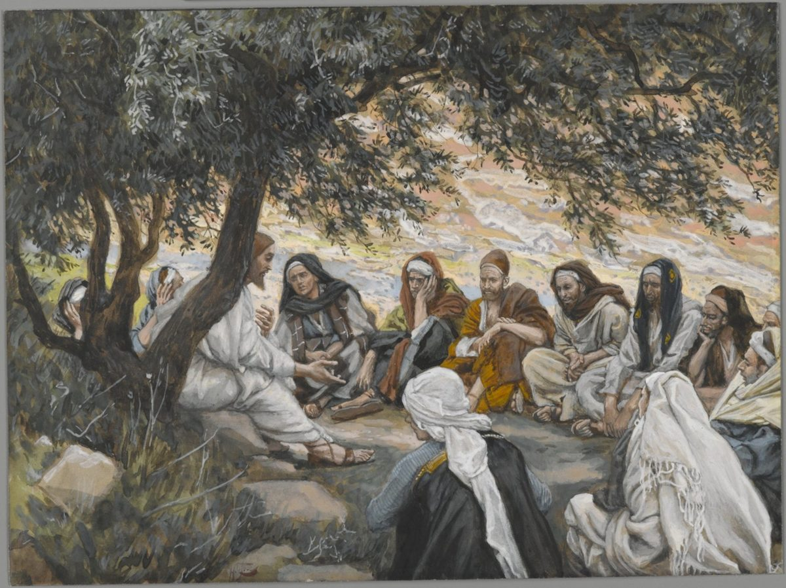

Matthew 10 — The Mister Translation

Tissot painted this scene after two research trips to Ottoman-ruled Palestine and Syria in the 1880s, sketching landscape, dress, and local models on site so that his four hundred Gospel watercolors could aim at ethnographic plausibility rather than the European staging most earlier painters had used without a second thought — the plain wool robes and striped head-wraps here are drawn from what he saw worn in the region, not invented in a Paris studio. ⚠ The result is deliberately unglamorous: no halo, no supernatural light, no raised pulpit — just a teacher and twelve tired-looking men sitting on the ground under a tree, which is arguably closer to what a genuine outdoor briefing before a dangerous, unpaid mission ('no gold, no silver... no bag for the road', 10:9-10) would actually have looked like than any gilded altarpiece. Compare the deliberately CONTEMPORARY 1600s-Rome staging Caravaggio chose for the calling scene one chapter back — two painters, nearly three centuries apart, making opposite bets about how to make an ancient scene feel real to their own audience.
_-_James_Tissot.jpg){kind=link}
Translator’s Notes
⚠ The one time Matthew uses the word. Matthew calls them “disciples” (mathētai) some seventy times and “apostles” exactly once — here, at the moment of commissioning, and never again. The word means ‘those SENT,’ and Matthew reaches for it only when sending is the actual point; everywhere else, before and after, they stay ‘disciples,’ learners.
Six pairs, not twelve names. The Greek conjunctions (“Simon… AND Andrew his brother… James… AND John his brother”) group the list into six pairs rather than a flat roll call — and Mark records that this is exactly how they were sent out, ‘two by two’ (Mark 6:7, not yet on these pages). The pairing is not this translation’s invention; it is built into the sentence.
⚠ A revolutionary and a collaborator, in the same twelve. Simon THE CANANAEAN is not ‘from Canaan’ — Kananaios transliterates the Aramaic qan’an, ‘zealous one,’ the same word Luke translates outright as ‘Simon the ZEALOT’ (Luke 6:15, not yet on these pages) — and by the first century that title marked a man committed to armed resistance against Rome. He stands three names away from Matthew the tax collector (see the entry), whose whole former livelihood was collecting Rome’s revenue. The list does not comment on the juxtaposition; it simply contains both.
Two more resolved by other pages already on this site. “Bartholomew” (literally ‘son of Tolmai’, a patronymic rather than a given name) is, by long and near-universal tradition, the same man John calls Nathanael — the two never appear together and never appear apart, one Gospel using each name exclusively. And “Thaddaeus” already has its own entry as Judas son of James, which lays out the manuscript question (some witnesses read ‘Lebbaeus, who was surnamed Thaddaeus’ — the very reading KJV prints here) in full.
⚠ Judas is placed last, and given a clause no one else gets. Every other name in the list stands alone or paired; Judas Iscariot alone carries a relative clause attached — ‘who ALSO betrayed him.’ Kai, ‘also,’ is doing real work: it says betrayal was one more thing this man did, appended almost as an afterthought to a name that, at the moment of this list, had done nothing wrong yet. See the entry for how the book's own two accounts of his death disagree.
⚠ A restriction the end of this Gospel will explicitly lift. ‘Do not go … to the Gentiles … go rather to the lost sheep of the house of Israel’ is a hard border, stated twice for emphasis, and it stands in this same book that closes with ‘go and make disciples of ALL NATIONS’ (28:19, not yet on these pages — the very word ethnē, ‘nations/Gentiles,’ forbidden here, becomes the destination there). The library does not smooth the two commands into one; this mission has a scope, and it changes.
The fourth voice to say the identical sentence. ‘The kingdom of the heavens has drawn near’ is word for word John the Baptist’s own proclamation (3:2) and Jesus’ own opening message when he took it up (4:17). Now it becomes the Twelve’s assigned sentence too — the same six Greek words in a third mouth, no longer a herald announcing a king or a king announcing himself, but a commission handed down the line.
“Freely you received, freely give.” The instruction against carrying money, a bag, spare clothes, or even a staff (see below on the cross for the other wooden object this chapter is remembered for) is not asceticism for its own sake; it is the practical consequence of the principle stated first — the healing authority just given in verse 1 was not bought, so it is not to be sold. ⚠ Worth noting honestly: Mark’s version of this same sending (6:8–9, not yet on these pages) allows a staff and sandals, where this chapter forbids both. The two lists do not perfectly agree, and this translation prints Matthew’s own wording rather than harmonising it toward Mark’s.
Peace that can be recalled. ‘Let your peace come upon it … let your peace return to you’ treats eirēnē (see the dictionary entry) as something almost physical — a blessing spoken that, if it finds no worthy house to rest on, comes back to the one who spoke it. Nothing is lost either way; the sentence is built so the messenger can never come away poorer for having offered it.
⚠ Worse than Sodom. The chapter that gave Lot’s city its name for catastrophe (Genesis 19, already on these pages) is now the FLOOR, not the ceiling, of judgment — a town that will not so much as listen to twelve unarmed men is told it will fare worse on the day of judgment than the city God rained fire on. The comparison is not rhetorical throat-clearing; it is the most severe sentence available in the shelf’s own vocabulary, aimed at people who did nothing but decline to open a door.
The tone turns without warning. Verse 15 is still about towns that merely decline to listen; verse 17 is councils, synagogue floggings, governors, kings, and family members handing each other over to death. Nothing in the text marks the shift as a leap forward in time to some later, harder mission; it is presented as the same speech, continuous, the danger simply named at full strength once the wolves have been mentioned.
“Innocent,” not merely harmless. Akeraioi (literally ‘unmixed, unadulterated’) is rendered KJV/ASV ‘harmless’ and Douay ‘simple’ — both real senses of the word, but neither quite catches that the Greek describes purity of MOTIVE (nothing mixed in with the dove-like intent) rather than mere lack of aggression or naivety, which is why this translation prints ‘innocent’ instead.
⚠ “It is not you speaking” — a promise, not an excuse to leave nothing prepared. The disciples are told not to be anxious in advance about what to say under interrogation, because the Spirit of the Father will speak in them at that hour. ⚠ This is addressed to a specific, extreme circumstance — arrest and trial for the name — and this library flags, without resolving, the long history of that promise being stretched to cover ordinary unpreparedness in far less dangerous settings than a synagogue court.
Family, turned into the danger. ‘Brother will deliver brother to death… children will rise up against parents’ anticipates, almost verbatim, what verses 35–36 will say is the actual PURPOSE of this mission — see the fuller note there, where the same picture is quoted directly out of the prophet Micah.
⚠ “You will not have gone through the towns of Israel before the Son of Man comes” — the hardest verse in the chapter, printed with its readings rather than settled. Taken at face value, this promises that some ‘coming’ of the Son of Man would happen within the lifetime of this specific mission, or at least within a lifetime — and history records no such visible arrival. Four readings circulate, none provable from the sentence alone: (1) it refers to the SPIRIT’s coming at Pentecost; (2) it refers to the fall of Jerusalem in AD 70, a real and datable ‘coming in judgment’; (3) the whole discourse blends this specific mission with a longer future one the disciples stand in for, so ‘you’ addresses the church across time, not only the Twelve in that hour; (4) it is genuinely about the parousia and Jesus, like other prophets, compresses a near and a far horizon into one sentence without marking the seam (compare how Isaiah’s oracles run near-term Assyria and far-term Messiah together). The library states all four and adopts none.
Last chapter’s accusation, now given a name and handed to the disciples as a PROMISE. At 9:34 the Pharisees said only ‘the RULER of the demons,’ with no proper name. Here, one chapter later, the title is finally spoken — Beelzeboul, likely a mocking corruption of the Philistine god Baal-zebub, ‘lord of the flies’ (2 Kings 1, not yet on these pages) reshaped toward ‘lord of dung’ or ‘lord of the (heavenly) dwelling’ depending on which Semitic root is read — and Jesus repeats the slander of himself as the baseline his followers should expect: if the master of the house was called this, the household gets no better treatment. The logic of ‘disciple is not above his teacher’ is turned, for once, into cold comfort rather than encouragement.
⚠ Two different killers, two different fears. Human executioners can end the body and nothing more; only God, this verse says, can destroy psychē AND body together, and the place named for that total destruction is Gehenna — the valley this site has already met inside the Sermon on the Mount (5:22). ⚠ The verse is deliberately not a threat aimed at the disciples; it is the reason they need not fear the executioners who ARE a real, immediate threat to them — a God who can do more than any human tyrant is the ground of courage here, not of dread.
Sparrows, and a coin small enough to make the point. The assarion was a small copper coin, roughly a day-laborer’s smallest wage denomination — two sparrows for the price of almost nothing, and the Greek adds a third bird’s worth of implication by saying even the worthless one left over does not fall ‘apart from your Father.’ ⚠ KJV prints ‘farthing’ here — a genuinely small English coin in 1611, but one that had shrunk to essentially worthless slang long before it was finally withdrawn from British currency in 1960, which is why modern readers can miss how deliberately CHEAP the original comparison was meant to sound. The hairs of the head, numbered, is the same argument pushed one step further: if God accounts for what is genuinely beneath notice, the disciples facing councils and kings are not beneath it either.
The grammar is the argument. ‘Whoever acknowledges me … I will acknowledge him… whoever denies me … I will deny him’ is built as a strict mirror, the same verb (homologeō/arneomai) used of the disciple and then of Jesus, the same court-language (‘before men’ / ‘before my Father’) on both sides of each pair. ⚠ Peter will do exactly the second half of this sentence, three times, before a servant girl’s fire (26:69–75) — a scene this saying does not know is coming, and does not soften in advance.
⚠ Set beside ‘blessed are the peacemakers.’ This is the same book that opened the Sermon on the Mount with a beatitude for peacemakers (5:9) and will later have Jesus order a sword put away with ‘all who take the sword will perish by the sword’ (26:52). The library states the tension plainly rather than reading machaira as a pure metaphor to make it disappear: whatever the sword stands for here, the same Gospel elsewhere commends peace and forbids the literal weapon without apparent embarrassment at holding both positions.
⚠ A direct quotation of Micah, not an echo. ‘A man’s enemies will be the members of his own household’ reproduces Micah 7:6 (‘a man’s enemies are the men of his own house,’ not yet on these pages) almost verbatim, and the surrounding list — son against father, daughter against mother, daughter-in-law against mother-in-law — tracks Micah’s own list closely enough that this is citation, not coincidence. The prophet was describing the moral collapse of a whole society; Jesus applies the identical language to what loyalty to him, specifically, will cost inside one family at a time.
⚠ “Take up his cross” — before the cross has been mentioned even once. This is the FIRST appearance of stauros anywhere in Matthew’s Gospel — and Jesus has not yet spoken one word about his own coming execution (the nearest hint so far was the veiled ‘when the bridegroom is taken away,’ 9:15). The disciples are told to carry a cross of their own before the narrative has told THEM, or the reader, that Jesus is going to carry one. Crucifixion was a punishment a condemned man’s own back carried the crossbeam of to his own execution site — so the image is not a generic hardship. It names the single most degrading death Rome had, and asks for it as a condition of ‘worthy.’
The paradox that survives translation into all four Gospels. ‘Whoever finds his life will lose it, and whoever loses his life for my sake will find it’ recurs, in some form, in Mark, Luke, and John as well — the single saying of Jesus attested most widely across independent Gospel traditions. Psychē here is rendered ‘life,’ the same word translated ‘soul’ five verses earlier (v28) — one Greek noun doing both jobs, exactly the ambiguity this translation is built to preserve rather than resolve by picking an English word once and for all.
⚠ An ancient legal principle, stated as theology. ‘The one who receives you receives me, and the one who receives me receives the one who sent me’ runs on the same logic as the Jewish legal concept of the shaliach, an authorized agent: to deal with a properly commissioned representative IS, legally and not merely sentimentally, to deal with the one who sent him. The chapter that opened with Jesus giving the Twelve his own authority (v1) closes by making that authority run all the way back up the chain to the Father.
Reward measured by welcome, not by outcome. A prophet’s reward for the one who receives him ‘because he is a prophet,’ a righteous person’s reward for receiving a righteous person ‘because he is righteous’ — the reward is not for correctly judging who counts as a prophet in advance; it is for the posture of welcome itself, extended on the strength of what someone claims to be.
The smallest gift named, deliberately. After governors, kings, betrayal, and the cross, the chapter’s very last promise is attached to a cup of cold water — the cheapest, least demanding act of hospitality imaginable, given to one of ‘these little ones’ simply ‘because he is a disciple.’ The scale of the discourse runs, in its last two verses, from the most extreme cost imaginable back down to the least, and treats both as counted.
Patterns worth carrying forward
Where this translation keeps the exact / distinct words: “apostles” kept exactly where Matthew himself uses it — once, and never again; “Cananaean” left transliterated rather than silently normalized to ‘Zealot’ (Luke’s word, not Matthew’s), with the meaning explained in the note; “Amen I say to you” kept identical at both its occurrences in this chapter (v15, v23), matching its use since chapter 5; “soul” and “life” both printed for psychē depending on context, rather than flattened to one English word throughout; and “a sword” left as the plain, uncomfortable word it is rather than glossed in the verse itself as a metaphor.
Where it goes its own way: the four-reading, no-vote treatment of “before the Son of Man comes” (v23), rather than silently adopting whichever reading is most comfortable; and printing Matthew’s own no-staff instruction (v10) beside Mark’s staff-permitted version in the note, instead of harmonizing the two accounts into agreement.
Echoes paid. ‘The kingdom of the heavens has drawn near” — John’s sentence (3:2), then Jesus’ own (4:17), now handed to the Twelve as their commission; the Beelzeboul accusation, unnamed at 9:34 and named here; Gehenna, met already at 5:22 and now gathered with its fuller history under Topheth; and the shadow of ‘taken away’ planted at 9:15, now answered by this chapter’s own first mention of the cross.
Echoes planted. The acknowledge/deny formula (v32–33), waiting for Peter to enact its second half at 26:69–75; ‘all who take the sword will perish by the sword” (26:52), standing in real tension with this chapter’s own ‘I came to bring … a sword’; and the Gentile mission this chapter explicitly forecloses (v5), waiting to be thrown open at 28:19.
Next in this book: chapter 11 — John the Baptist, now in prison, sends his own disciples to ask the question this chapter never quite let him ask in person: ‘Are you the one who is to come, or should we look for another?’